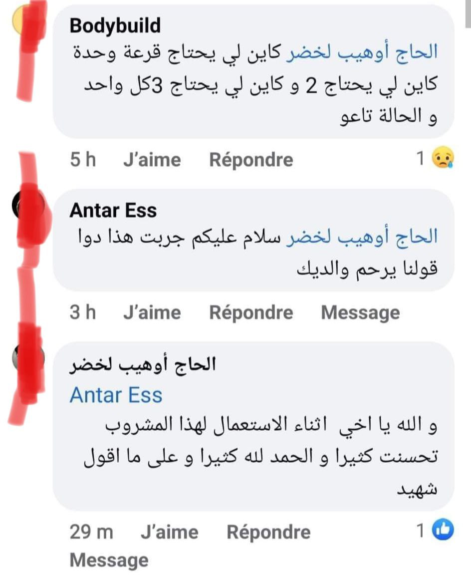
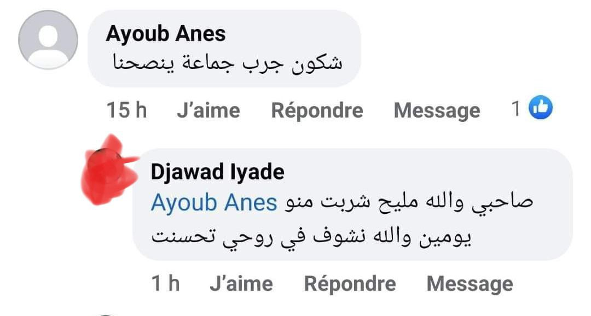
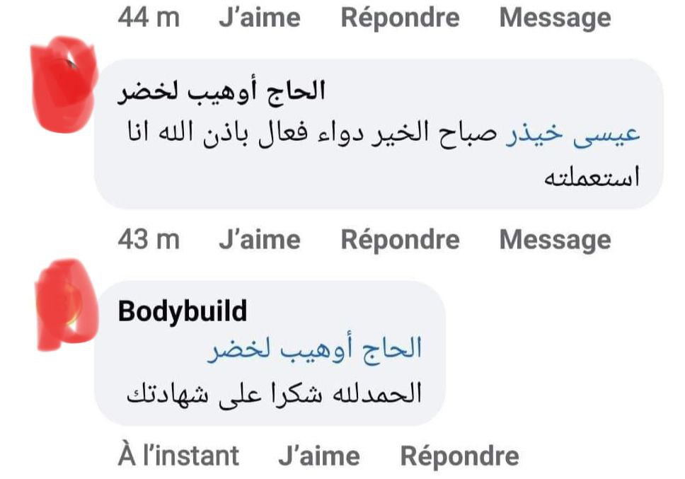

كيف تحدث مشاكل العيون وما هي علاماتها وأعراضها وأسبابها؟
مع تقدمنا في العمر ، نصبح أكثر عرضة لمشاكل العيون مثل : إعتام عدسة العين ، وتنكس الشبكية ، والزرق. في هذا الصدد ، يعد الحفاظ على الرؤية جانبًا مهمًا من نمط الحياة الصحي. و بالفعل التغذية السليمة يمكن أن تساعد في تحسين صحة العين ومنع تطور مشاكل العين.
ما هي أبرز مشاكل العيون؟
أبرز مشاكل العيون هي إجهاد العين و هو السبب الرئيسي المتسبب للكثير من المشاكل بالعين .
إجهاد العين هو مشكلة شائعة تحدث عند تعرض العينين للإرهاق نتيجة الاستخدام المفرط، مثل القيادة لمسافات طويلة أو التحديق في شاشات الكمبيوتر والأجهزة الرقمية الأخرى.
ما هي اعراض إجهاد العين؟
تشمل أعراض إجهاد العين ما يلي

ما هي الأسباب الشائعة التي تؤدي إلى إجهاد العين؟
ما الذي يمكن للنظر للأجهزة الرقمية كالتليفون و الكمبيوتر و التلفاز ان يضر نظرنا ؟
تُسبب أجهزة الكمبيوتر إجهاد العين أكثر من قراءة المواد المطبوعة، وذلك لأن مستخدميها يفعلون عادةً ما يلي
ما هو المنتج الذي يمكنه مساعدتك على التخلص من كل مشاكل العيون و إجهاد العين و مشاكل النظر ؟
إنه المكمل الغذائي Oculus Vision
- Oculus vision هو مكمل غذائي طبيعي 100% مصنوع بمواصفات روسية لضمان الجودة و النتيجة و بالمناسبة يتم الأن توزيع هذا المكمل الغذائي في العديد من الدول و منها الجزائر ، تم إنشاء هذا المكمل الغذائي على أساس التخلص من جميع مشاكل العيون بدون رجعة إن هذا المكمل الغذائي يساعد بشكل أفضل من ما يشابهه من المكملات الغذائية من الماضي .
حيث يقوم Oculus vision بتجميع البروتينات الضرورية بشكل جيد للغاية في غضون أسابيع من إستخدامه. أريد أيضاً ان اخبركم انني أنصح جميع مرضاي بهذا المكلم الغذائي الرائع دائماً لأنه أظهر نتائج رائعة على كل من إستخدمه نظراً انه ليس له أثار جانبيه لانه منتج طبيعي 100% .
من هم أكثر أشخاص بحاجة إلى إستخدام OculusVision ؟
يُنصح بهذا المنتج لمساعدة أي شخص يعاني من إجهاد في العين خصوصاً لهؤلاء الأشخاص :
مكونات OculusVision
المنتج طبيعي 100% !
مستخلص اللوتين يمكن أن يساعد في تحسين صحة العين، حيث يقوم بحماية العين من الأضرار التي يمكن أن تسببها الأشعة فوق البنفسجية والتي يمكن أن تؤدي إلى مشاكل مثل المياه البيضاء والماكولار ديجنيريشن.
السيليكا الغروية هي عنصر معدني مهم لصحة الجسم، حيث تشكل جزءًا من العديد من الأنسجة في الجسم مثل العظام والأنسجة الضامة والغضاريف. كما أنها تعتبر مضاداً للأكسدة الطبيعي وتساعد في تقوية الجهاز المناعي والحفاظ على صحة الجلد والشعر والأظافر.
أن استهلاك الأطعمة الغنية بالمغنيسيوم يمكن أن يساعد في تحسين صحة العين، حيث يمكن الحصول على المغنيسيوم من الخضروات الورقية الخضراء والمكسرات والحبوب والبقوليات والأسماك واللحوم او عن طريق تناوله في شكل مكمل غذائي كما هو الحال في OculusVision.
أراء الخبراء
" بقدر ما لا أرغب في دعم الطب المنزلي ، إلا أن هذا المنتج المذهل جذبني بمفعوله المذهل على جميع من جربه و هو حتى الأن المنتج الأكثر فاعلية للتخلص من مشاكل الرؤية وحمايتها. في رأيي ، فإن بيت القصيد هو في المزيج الدقيق للغاية من مونوهيدرات اللاكتوز, السيليكا الغروية, ستيرات المغنيسيوم - بفضلهم ، تُزيل حبوب Oculus vision الأسباب الحقيقية لضعف البصر ، و تقضي على المشكلة ، كما لا تفعل هذا منتجات اخرى كثيرة. لقد نصحت بالفعل بهذه الحبوب للكثير من مرضاي بالفعل . لقد إستخدم الكتير منهم هذه الحبوب وهم سعداء جدًا بالنتيجة! "
ما الذي يجب عليك فعله لطلب هذا المنتج ؟
نموذج الطلب الرسمي

بعض أراء الأشخاص اللذين جربوا Oculus Vision


